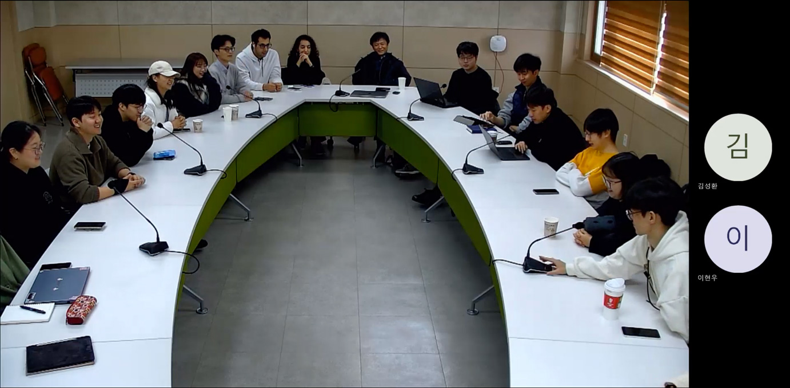
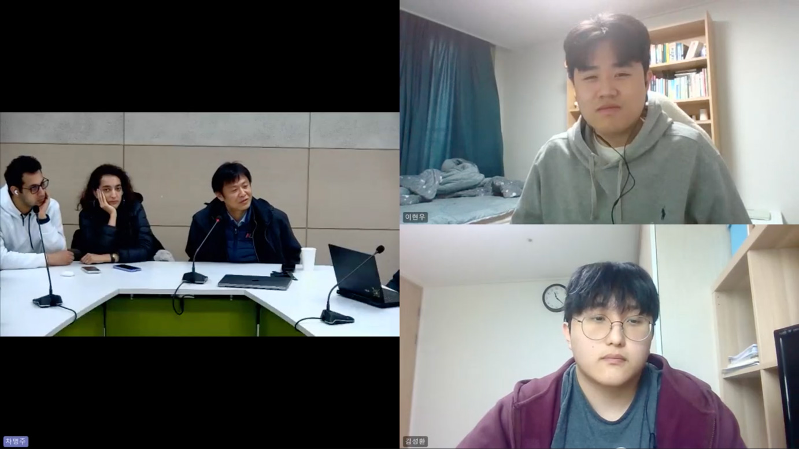
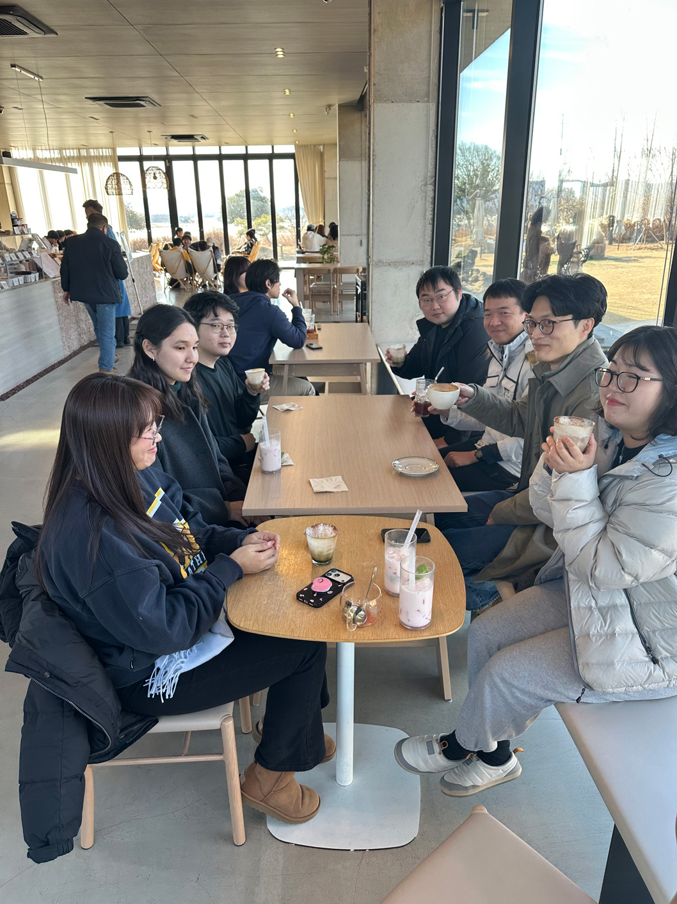
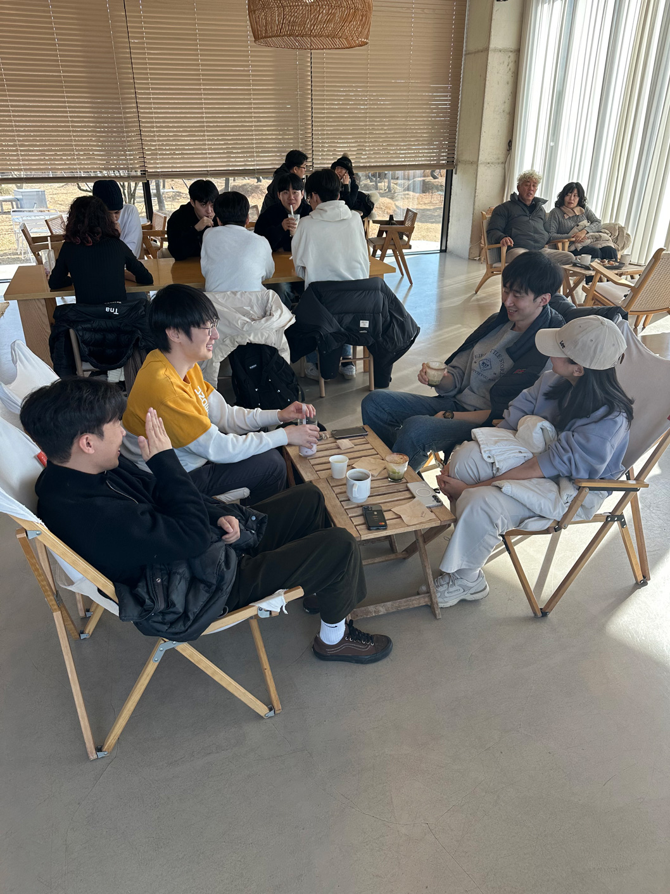
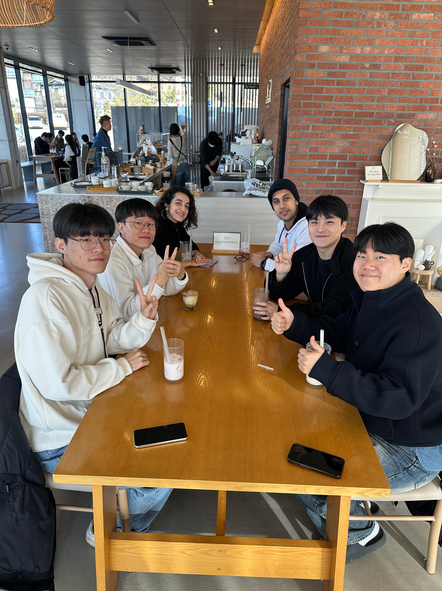

작성자: 허필원
2025년의 마지막 날, HUR Group 연구실 구성원 중 19명이 한자리에 모여 한 해를 돌아보고 서로의 성장을 축하하는 시간을 가졌습니다. 현장과 온라인을 통해 함께한 이 자리에서 우리는 솔직한 회고와 따뜻한 격려를 나누었습니다.

올 한 해 동안 연구실은 다양한 도전을 통해 많은 것을 이뤄냈습니다. 외골격 로봇(FEP 과제), 상지 재활 로봇, 휴머노이드 개발 등 난이도 높은 프로젝트를 수행하며 하드웨어 구현부터 환자 대상 실험까지 종합적인 경험을 쌓았습니다. 이날 모임에서는 모든 학생들이 한 해를 돌아보는 이야기를 나누었는데, 그중 일부를 정리해 보면 다음과 같습니다.
조권승 학생은 올해 논문 3편 제출을 목표로 달려왔고, 외골격 과제 전체를 리딩하며 고생한 경험이 내년의 밑거름이 될 것이라고 포부를 밝혔습니다. 김민석 학생은 휴머노이드 로봇을 세우는 데 성공했고, 로봇이 처음 섰을 때 느낀 "도파민"이 다음 날까지 이어졌다며 연구의 즐거움을 전했습니다.

올해는 새로운 구성원들이 많이 합류한 해이기도 했습니다. Hesam과 Mahta 학생은 이란에서 합류하여 Vision-Language-Action 모델과 Trust-aware 제어 시스템 연구에 매진하고 있습니다. 카자흐스탄에서 온 Alima 인턴은 Fusion 3D 모델링을 배우며 하반신 보철물 개발 프로젝트에 참여 중입니다.
양용승 학생은 8명의 HUR Group 지원자 중 최종 2명의 합격자 중 하나로, FEP 연구를 공부하며 다양한 분야에 대한 학습의 중요성을 깨달았다고 합니다.
이번 모임에서 특히 강조된 것은 문서화와 지식 공유 시스템의 필요성이었습니다. 이강우 박사는 연구 분야가 다양해지면서 발생할 수 있는 파편화를 방지하기 위해 체계적인 인프라 구축이 필요하다고 제안했습니다. 이 시스템은 신입생들이 빠르게 적응하고 더 나은 연구를 진행할 수 있는 기반이 될 것입니다.
허필원 교수님은 "학생들의 성장이 곧 저의 성공"이라며, 연구비 확보의 주된 목적이 학생들의 인건비 마련에 있음을 강조했습니다. 또한 AI 도구의 적극적인 활용, 자기만의 시스템 구축, 그리고 서로 간의 활발한 소통을 당부했습니다.
내년에는 다양한 국제 학회 참석이 예정되어 있습니다:
ICROS (7월, 대구) – 허필원 교수님이 프로그램 위원장
IFAC World Congress (8월, 부산) – 세계 최대 규모 제어 학회
ICRA (6월, 오스트리아 비엔나) – 세계 최고 로봇 학회
연구실 목표는 저널 논문 10편 이상 출판. 모두가 자신의 연구에 책임감을 갖고, "학회에 빈손으로 가지 않는 연구실"이 되자는 다짐을 새롭게 했습니다.

회의 후에는 "불태산 진원성"에서 맛있는 점심을 함께하고, 바로 옆 "오데온" 카페로 이동해 커피 한 잔과 함께 이야기꽃을 피웠습니다. 학문적인 토론부터 일상의 소소한 이야기까지, 연구실 가족으로서의 유대감을 더욱 단단히 할 수 있었던 시간이었습니다.


2025년 한 해 동안 수고한 모든 연구실 구성원들에게 감사드리며, 2026년에도 함께 성장하고 더 멋진 연구 성과를 이뤄내길 기대합니다. 새해 복 많이 받으세요! 🎉